The aggregate layout
My verdict: functionally capable, visually misprioritized. At the primary 1280×720 CSS viewport, the eye meets “Settings,” a long category list, “Your dashboard,” an instructional sentence, two broad dropdowns, a prominent arrangement button, then the actual canvas. The right-hand panel leads with keyboard instructions and coordinate fields. This sequence emphasizes administration before composition.
The warm surfaces and real widget artwork are worth preserving. Explicit Save, Discard and Undo give editing a useful safety net. The selected outline makes selection legible. But those strengths do not compensate for the space budget: the preview is roughly 424×260 CSS pixels in the primary capture, estimated from image bounds at its 1.5 capture scale. Important widget details become miniature while ordinary input fields remain large.
The four simultaneous columns—Settings categories, widget palette, canvas, inspector—are individually reasonable and collectively excessive at this height. Above them, two heading levels and the toolbar consume several rows. Below them, status and the save area reserve more space. The editor needs a different arrangement of its tools, with the canvas receiving the remaining width and height.
The whitespace is also in the wrong places. There is generous space around headings and below the canvas, while palette cards and inspector controls are cut off. Calmness comes from a clear hierarchy and fewer simultaneous choices; empty margins around cramped working areas do not create it.


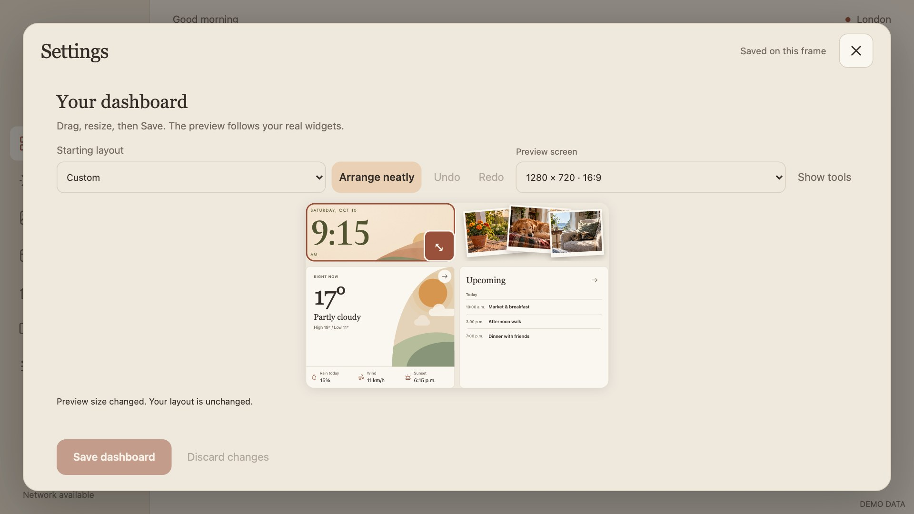
Questioning each element
For every persistent element, the test is whether it helps the current editing task enough to justify the space and attention it takes.
Shell, navigation and hierarchy
Lightbox and dimmed dashboard
Does the surrounding dashboard help me edit, or repeat what I am already seeing?
The lightbox makes the editor feel contained and preserves context. On the largest capture, however, the backdrop exposes a second clock, photo stack, agenda and navigation rail around the editor. These compete with the preview. Keep the lightbox entry from Settings, but let the editing workspace use more of its surface and quiet the backdrop further.
Settings category rail
Do I need eleven other destinations visible while placing a widget?
The selected Dashboard category is clear, and the rail is useful for ordinary Settings. During layout editing it takes a full column away from the work. Offer a focused editor state with a clear “Back to Settings” route; retain category navigation when browsing settings. At short landscape sizes, open the editor in that focused state.
“Settings” and “Your dashboard”
Why do two large titles precede one task?
The serif type belongs to Skylit, but the duplicated heading hierarchy spends height without adding meaning. Use one compact “Edit dashboard” heading with a quiet Settings breadcrumb or back action. Preserve generous touch targets by reducing title rows and spacing.
Instructional sentence
Must experienced users read this every time?
“Drag, resize, then Save” describes the workflow. “The preview follows your real widgets” explains implementation more than interaction. Show a concise first-use hint, then put help in an accessible help action. The canvas should demonstrate live editing.
Close ×
Will closing save, discard, or ask?
The large target is good. Its distance from the save controls makes it feel like a separate system action rather than the end of editing. Place the draft state and Save nearby, and retain the unsaved-change safeguard. A screenshot cannot establish whether people understand that safeguard before using it.
Saved / unsaved heading
Saved what, and why is the same state repeated below?
“Saved on this frame” is appropriately local, but generic in a shared Settings shell. The resize capture repeats unsaved state at the top and beneath the canvas. Use one persistent dashboard draft indicator next to Save. Keep contextual error feedback near the interaction that caused it.
Toolbar and global editing actions
Starting layout / Custom
Am I choosing a starting point or replacing the work I have already done?
“Starting layout” reads as onboarding, while “Custom” reads as a status. Neither explains the consequence of choosing another option mid-edit. Move presets to “Layouts…” with thumbnail choices and an explicit replacement consequence. Show Custom as a small status only when useful. The current dropdown expands horizontally far beyond the space its label needs.
Arrange neatly
What changes, and whose idea of neatness is being applied?
This is the strongest filled action in the toolbar even though it may disrupt a deliberate composition. “Neatly” is subjective. Use a quieter “Auto-arrange” action under layout tools, explain its effect, and keep one-step Undo. Reserve primary visual emphasis for saving deliberate work.
Undo and Redo
Can I immediately see the safe way back after a gesture?
These deserve stable, nearby placement as an editing pair. Their disabled state is visible, but loose text between large controls makes them look incidental. Use a compact grouped treatment with familiar arrow icons, accessible names and desktop tooltips. Keep the touch hit areas generous.
Preview screen dropdown
Does this change the frame, the layout, or only the simulated viewport?
“1280×720 · 16:9” is precise for a technical reader but does not communicate scope. Call it “Preview size,” name the current frame separately, and explain that switching it does not change the saved layout. Consolidate it into a compact preview control; do not let a long technical value consume a major share of the toolbar.
Expand canvas / Show tools
Does focus mode actually make design inspection easier?
The before/after pair shows little meaningful canvas enlargement. “Show tools” also loses the relationship to the original action. Rebuild this as a clear focus mode that reclaims vertical space, including redundant headings and toolbar rows. Keep Save, Exit focus, Undo and an on-demand Add/settings route reachable.
Save and Discard
Why do I need to travel to the bottom to finish?
Explicit commitment is good. A tall footer with a prominent disabled Save still takes substantial space; the 960×540 screenshot does not show these actions at all. Keep a stable, compact action area in the header, adjacent to draft state. Discard should be quieter but easy to find. Do not solve this with an overlay that covers the canvas.
Palette, canvas and direct manipulation
Widgets heading and hint
Is adding a widget immediately discoverable?
The heading names the collection but the palette initially emphasizes widgets already present. The hint supports drag and tap, which is valuable, yet consumes much of a short panel. Label the action “Add widget,” give one brief hint, and put available choices first.
Palette card size and artwork
Can I compare the available widgets without scrolling past large samples?
At the primary size there is one complete Clock & date card and part of Weather. Large thumbnails and padding make a nine-widget catalogue feel harder to explore than it should. Use consistent compact previews with names; preserve enough detail to distinguish widgets. The current clock thumbnail does not reflect the selected illustrated style, while the note thumbnail says “A little note” and the placed widget instead presents setup instructions. Samples need to communicate appearance and readiness more faithfully.
Added state and six-dot grip
Why does an unavailable item still advertise dragging?
Clock and Weather are faded and marked Added, yet retain a grip. That mixes “cannot add” and “can manipulate.” Keep available widgets separate from those on the dashboard, or let an existing entry clearly select its canvas widget. Explain the one-of-each constraint once; remove drag affordances from entries that cannot be added.
Palette scrolling
Do cropped cards explain that more choices exist?
A partial card is a weak scroll cue, and in the short capture the first card is itself cut off. The palette, inspector and outer Settings content create multiple scrolling regions. Give each necessary region a clear boundary and overflow cue; adapt the panel arrangement before forcing users to juggle three scroll contexts.
Canvas boundary and context
Where can I place a widget, and what part of the final screen am I seeing?
The empty note layout reveals a rounded canvas surface, but the filled layout's loose photo prints and matching paper tones make its perimeter less obvious. Give the canvas a quiet, consistent boundary and label its preview scope. Keep the underlying canvas faithful to the saved design. Offer a separate whole-dashboard preview for checking the surrounding rail and header; the current editing crop does not show those relationships.
Selection outline and movement
Does selecting make the widget look editable, or only highlighted?
The accent outline is clear and should remain. A corner arrow communicates resize, but the screenshot gives little visual instruction for moving the body. A small selection label or move cue can help without permanent handles on every module. Show alignment guides and valid placement only during manipulation; a permanent grid would add clutter.
Resize handle
Can I resize without covering the thing I am evaluating?
The high-contrast rounded square is visually disproportionate to the scaled widget. At 960×540 it is approximately as tall as the clock tile. In the resized-clock capture it covers a large part of the numeral and illustration. Preserve the touch target, but use a smaller visible grip with a larger hit area, a reserved selection gutter, or a detached handle. The target must remain unambiguous and avoid neighbouring controls.
Widget links in the preview
Will the weather and agenda arrows navigate, select, or drag?
The real widget arrows are visually retained, while the editor treats the preview as a composition surface. That fidelity is useful, but the apparent actions need an explicit edit-mode convention. Selecting should consistently select the widget; direct editing should open its options. Keep navigation behaviour for a clearly separate preview mode.
Empty and unconfigured widgets
What should I do after adding a note with no content?
The placed Note says to add content in Household settings, while its inspector provides geometry and removal. This breaks the flow from adding to making the widget useful. Offer a concise “Edit note…” route from the inspector that preserves the draft and returns to it. Use the same convention for other modules requiring setup.
Inspector, feedback and visual finish
Selected widget title
Is the connection between this panel and that widget unmistakable?
“Clock & date” is helpful, but separated from selection by a wide gap. Keep the title aligned with the selected widget's context and group only relevant options beneath it. An inspector should change purpose with selection; avoid presenting it as a generic settings form.
Keyboard instructions
Why do desktop shortcuts lead the inspector on a touch frame?
Arrow and Shift-arrow support is worth preserving. The paragraph is too prominent and pushes visual preferences out of view. Put shortcuts in Help or a compact contextual hint for keyboard use. On the frame, prioritize touch editing and the options people came to change.
Column, Row, Width, Height
Do users want coordinates, or a bigger clock in a better place?
Four large numeric inputs dominate the inspector. Their units and relationship to the invisible grid are unclear. Remove Column, Row, Width and Height entirely. Use direct dragging, snapping and live resizing, with keyboard equivalents and meaningful size presets where helpful. The owner should not need to translate grid numbers into composition.
Clock style
Why is the most visually interesting option below geometry?
At 1280×720 the control is out of view; at 1280×800 it is partly clipped. On larger screens it becomes usable. Make the style choice the first clock-specific control. Four compact thumbnails would communicate the designs more directly than names alone, provided they do not crowd out the canvas.
Clock detail disclosure
What distinct task does this second preview support?
The live canvas already shows composition. A detail view can still help inspect the analog dial or flip mechanism at a larger scale, but “Clock detail” does not explain that purpose. Turn it into an explicit “Inspect clock” view at useful magnification, or remove the redundant sample. It should never substitute for an adequately sized editing canvas.
Remove module
Is removal discoverable without competing with normal adjustments?
The quiet treatment avoids alarming emphasis, but the action is absent from the primary visible inspector. Keep it in a predictable selected-widget action area, with a clear removal icon and accessible name. Make Undo available immediately afterward.
Feedback beneath the canvas
Does the current message explain the current state?
“Unsaved changes discarded” remains visible in several otherwise settled screenshots. That is a past event rather than useful current guidance. “Module added. Save to apply it” is more useful, but repeats the header's unsaved state. Use one persistent draft indicator, brief success announcements, and specific persistent errors when correction is needed. Preserve accessible announcements without giving every event a permanent row.
Colour, borders and type
Are the tools legible while letting the artwork lead?
The Linen and Ocean dark captures retain Skylit's warmth and coherent typography. The problem is hierarchy and scale. In dark mode, canvas edges and palette cards merge more into the shell; disabled text is also subdued. Strengthen the editing surface's separation modestly, and verify actual contrast before making an accessibility claim. Avoid adding stronger borders to every nested region.
Responsive composition needs different tool arrangements
All landscape sizes should preserve the same workflow. They do not need the same simultaneous columns. Shrinking a desktop arrangement until it fits is insufficient when a touch handle becomes the size of the widget beneath it.
960×540 · short 16:9
The weakest landscape composition. The canvas is tiny, the palette's first card is clipped, the resize handle nearly fills the clock's height, and Save is outside the captured view. Hiding the introductory sentence helps only slightly. Use a focused canvas with an Add drawer and contextual options drawer. Keep completion actions visible.
1280×720 · primary 16:9
The core design still fails the visual editing hierarchy. One complete palette card and no visible clock-style picker is a poor trade for the large title/navigation treatment. Reclaim header height and the Settings rail before reducing control or widget sizes.
1280×800 · 16:10
The canvas is larger and two palette cards become visible. The clock-style picker is still clipped at the inspector's bottom. Eighty extra pixels help, but do not fix the order of information or independent scroll friction.
1600×900 · desktop 16:9
The first comfortably readable editing composition. Three palette cards and the clock-style picker appear. Keep this ability to show tools simultaneously when space supports it. Even here, the wide dropdowns and dual headings overstate secondary controls, and the palette starts with unavailable entries.
1920×1200 · large 16:10
The inspector finally shows its style and removal actions together. The lightbox's maximum size leaves a conspicuous duplicate dashboard behind it. Use the additional room for purposeful inspection or a larger canvas, while maintaining a comfortable reach between related controls.
390×844 · narrow fallback
The initial viewport spends most of its height on navigation, headings and wrapped toolbar controls before reaching a tiny canvas. This is a fallback, not the landscape design target. Start with the canvas and use compact Add/Options actions below it; keep numerical editing available if dragging becomes impractical. The layout should not ask the user to scroll through the whole setup form before seeing their work.
What I would change first
The redesign should reduce competing chrome and improve task order. It should preserve the real responsive widgets, the warm palette and safe draft behaviour.
Make the editing surface the main event
Within the Settings lightbox, offer a dedicated workspace with one compact header: Back to Settings, Edit dashboard, Undo/Redo, preview controls, draft state and Save. Give the remaining height to the canvas. Short landscapes should use on-demand palette and inspector panels; larger screens can retain both.
Make focus mode actually enlarge the canvas
Reclaim height as well as width. Hide redundant title and help rows; consolidate layout tools. Compare default and focused captures at the same viewport and require a visibly larger preview, with useful Add and selected-widget actions still reachable. If another constraint caps the size, the control must say what it really does.
Remove coordinates; lead with visual choices
For a selected clock, show style and meaningful size choices first. Remove exact position and dimension fields from the owner interface. For a note, expose the content-editing route. Keep removal predictable and Undo nearby.
Make the palette quick to scan
Compact, consistent previews; available widgets first; distinct treatment for widgets already present. Remove the misleading grips on unavailable additions. Preserve both tap-to-add and drag placement, with a clear touch handle where needed.
Refine manipulation and feedback
Use a quieter visible resize grip with a generous hit area that avoids obscuring the artwork. Add guides only during a gesture. Distinguish selection, blocked placement and view-only widget actions. Consolidate save state and retire stale success messages.
Compact available choices
Clock
Forecast
Note
Shopping
Visual style
Size options
Content settings
▸ Precise placement
Remove · contextual helpAcceptance should judge tasks and hierarchy, not just whether elements fit
- At both 1280×720 and 960×540, the dashboard is the dominant visual area and Save remains reachable without searching through Settings.
- From the initial view, a user can discover available widgets, select the clock and find its style options without scrolling past geometry fields.
- A resize target stays comfortable to touch without hiding numerals or a substantial part of a small widget. Selection and movement remain obvious.
- Focused mode materially improves inspection at the same viewport. The before/after screenshots must show this, rather than merely fewer tools.
- Check adding a note, moving Weather, resizing the clock, changing clock style, undoing and discarding. Observe confusion and accidental actions on the frame; screenshots alone cannot establish gesture quality.
- Repeat composition review at 16:9 and 16:10 sizes, light and dark. Tools may move between panels and drawers, while the workflow and visual language stay coherent.
Screenshot evidence
Click an image for its original capture. Labels are CSS viewport sizes, not the dimensions of the JPEG. The default and expanded images are compared above; the remaining eleven reviewed images appear here.

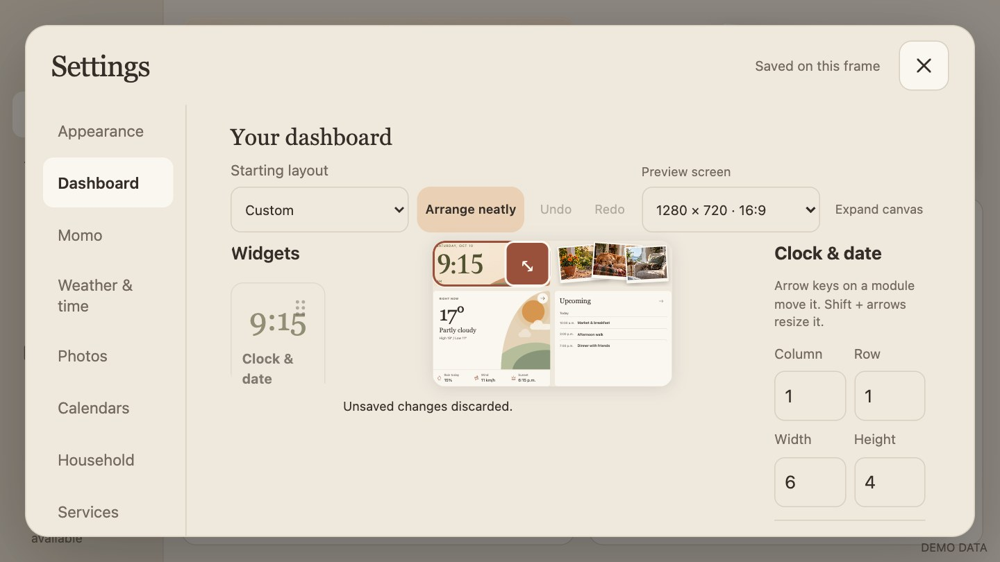

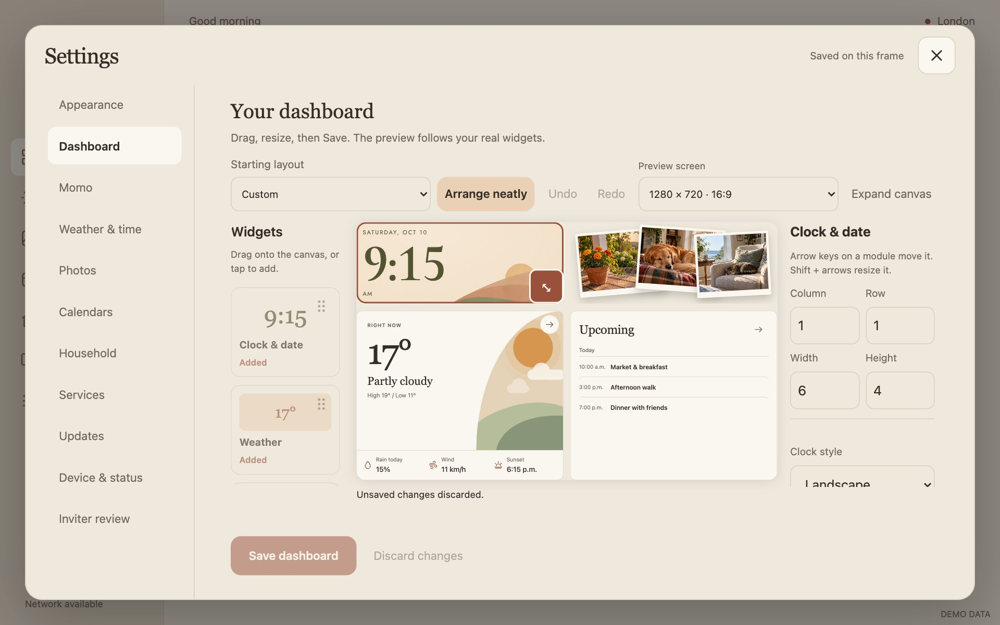

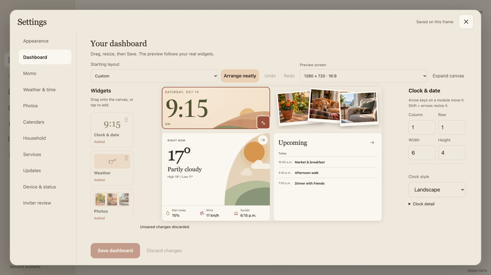

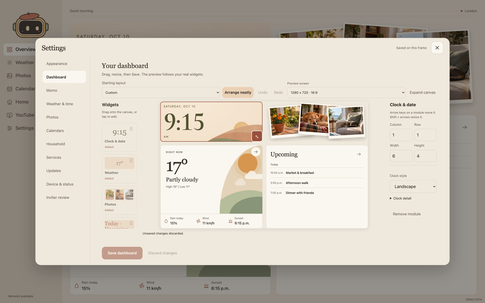

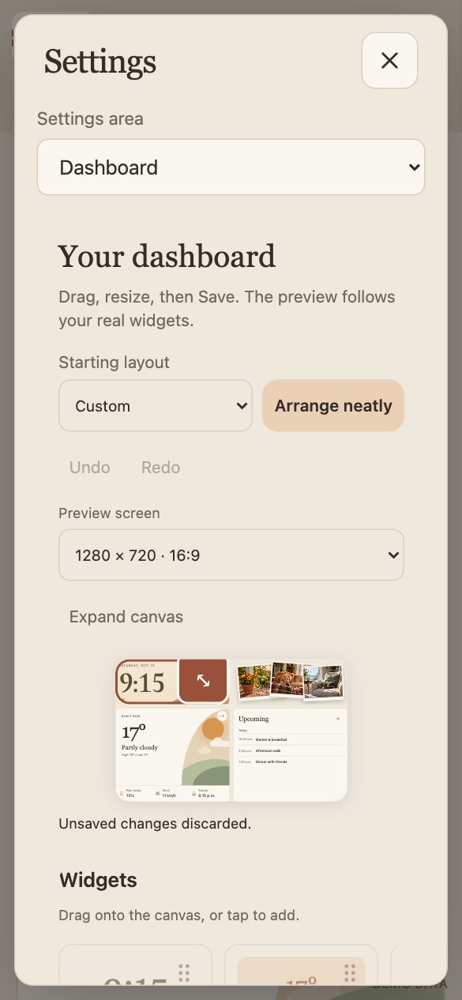

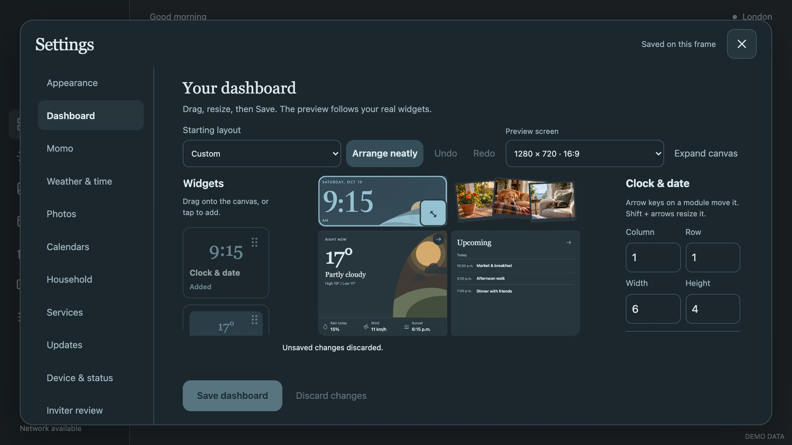

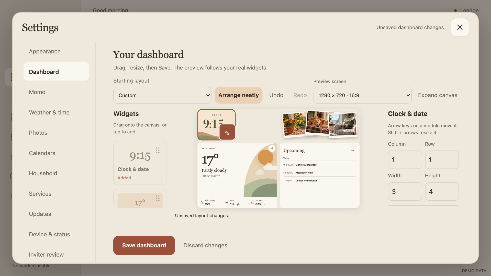

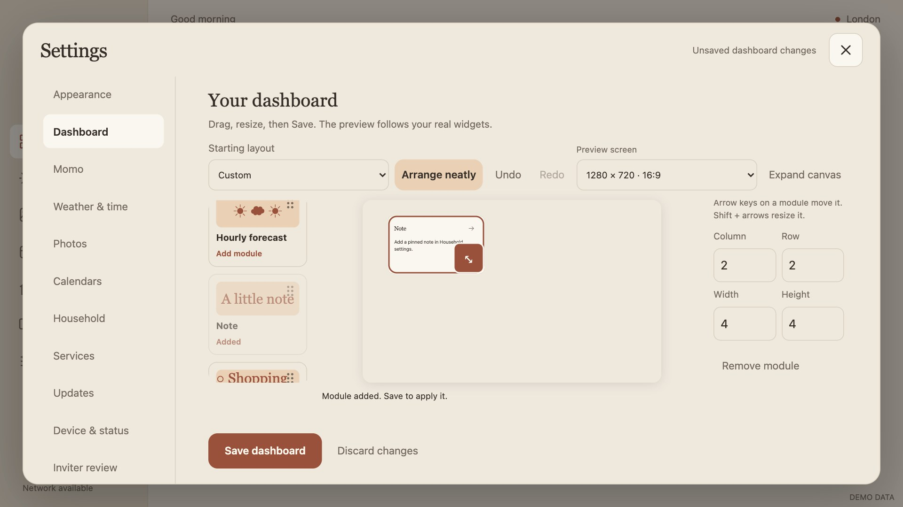

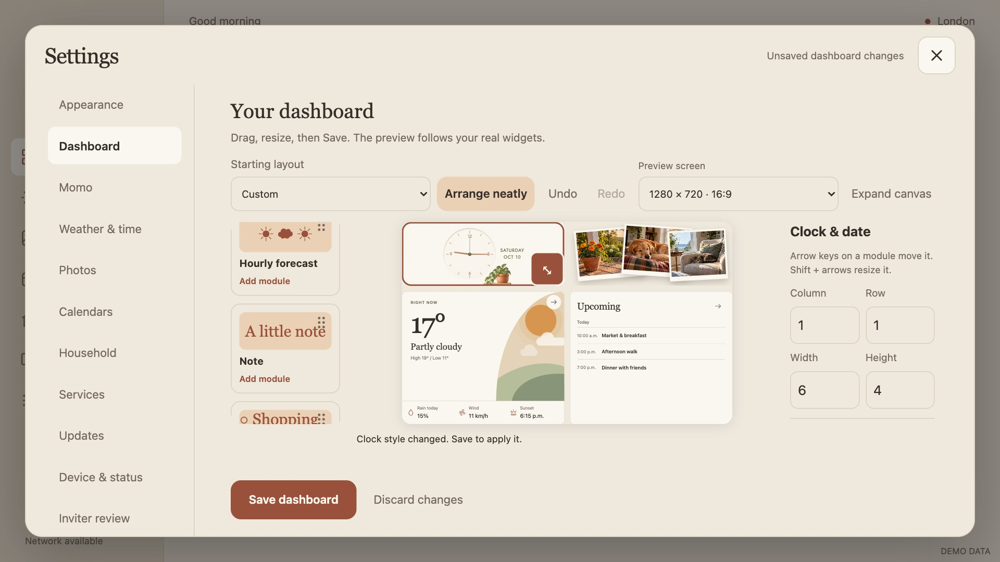


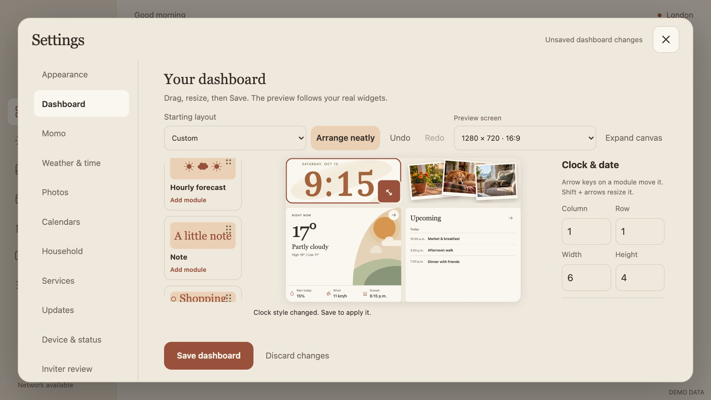
Review limits. The visual findings above come from the existing screenshots. Source was checked only to clarify preset replacement, focus mode and the secondary clock preview. Static captures do not prove touch behaviour, animation quality, keyboard discoverability or measured colour contrast. Proposed changes require a fresh visual and interaction pass; earlier geometry checks establish fitting, not usability.